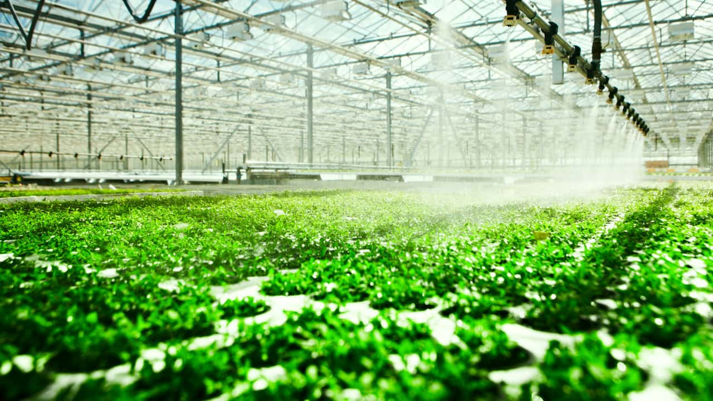

Carbon emission and food production
What determines our carbon footprint is not only made by how we travel or heat up our houses but also by what we eat and its production methods. As a matter of fact the production of our food has a great impact on our climate change and to have a clear understanding of these issues, it could help us to reduce CO2 emissions. 70% of all agricultural land is used for livestock production making meat production the major contributor to climate change and since its consumption has grown around the world so has climate change too. Read more...